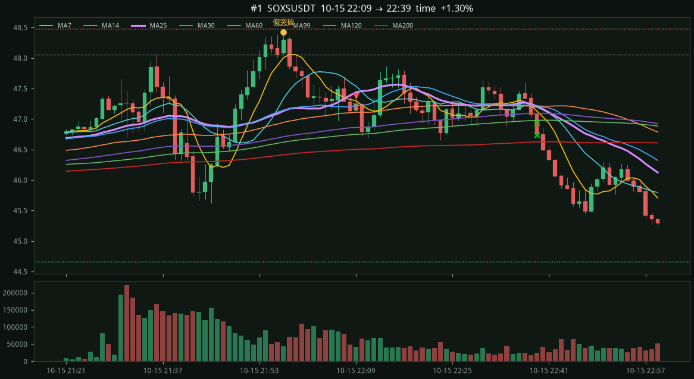
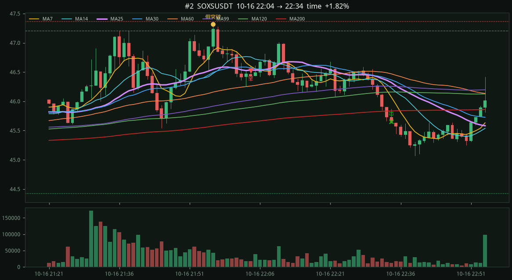
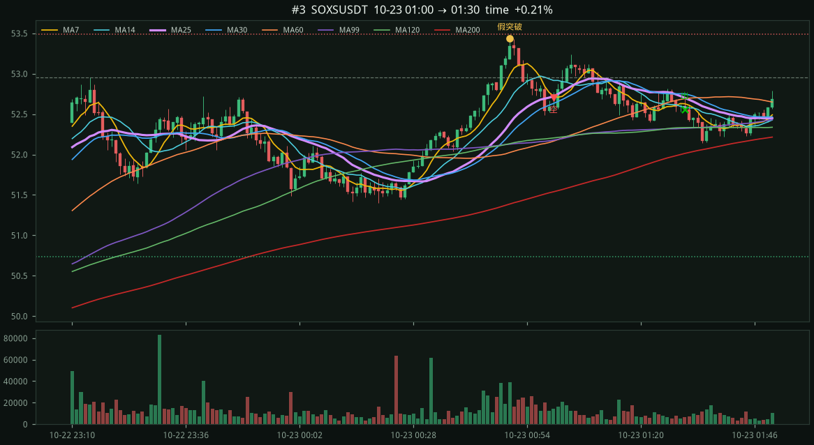
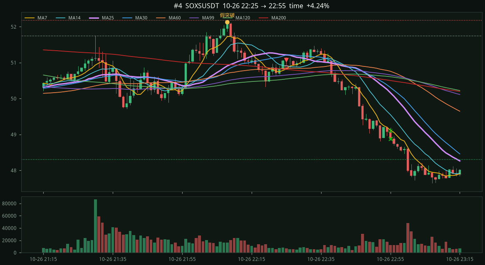
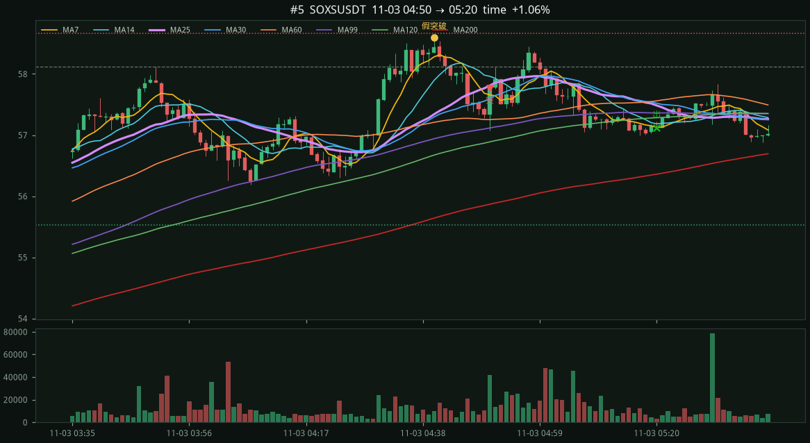
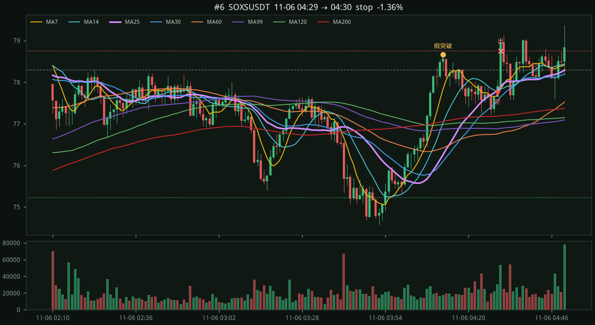
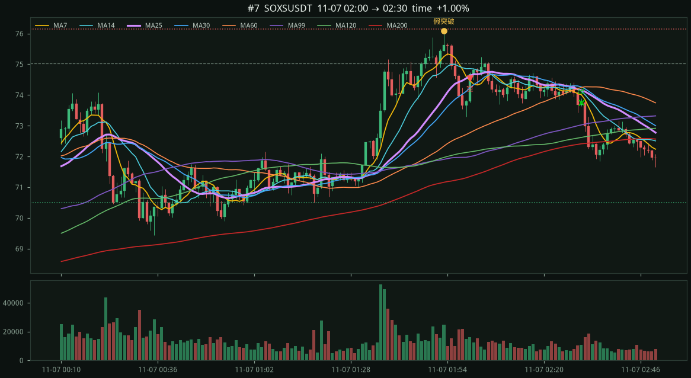
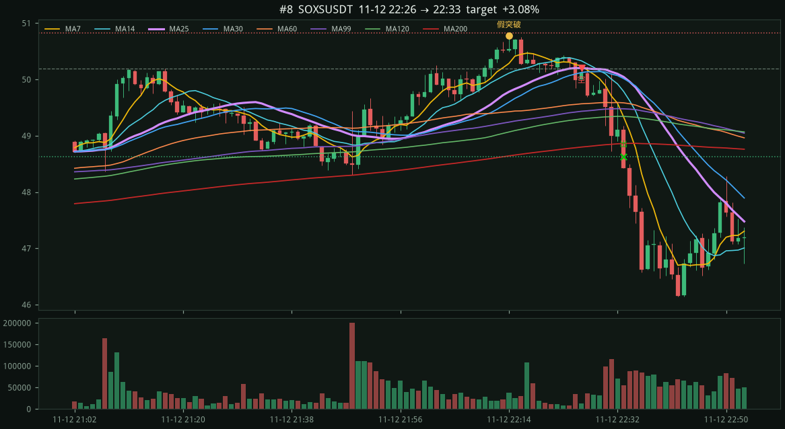

#1 · SOXSUSDT2026-10-15 22:09 → 10-15 22:39
+1.30%
entry 47.39 stop 48.48 (+1.09) target 44.65 exit 46.74 time 前高 10-15 21:36 48.06 假突破 10-15 21:57 48.43 跌破 10-15 22:08 MA7 47.30 / MA14 47.54 / MA25 47.44 / MA99 46.86

進場 2026-10-14 18:17 → 2026-11-13 18:17 台北時間 · K 線熱身從 2026-10-12 17:29 · 46129 根 · 進場模式 limit · 時段 ny_open
SOXSUSDT 1 分 K，時區 Asia/Taipei。未收盤的當根先丟掉。價格報酬是永續合約本身的漲跌，不是再乘保證金槓桿。SOXS 現貨本來就是 3 倍反向半導體；這裡沒有再疊一層槓桿，也沒有模擬強平。
漏斗：刺破前高 79 → 超漲過大放棄 6 → 跌破 MA25/30 39 → 進場 8
（非大賺結構 24 · 離 MA99 太近 7 · 風險不合 3）
出場：停利 1 · 停損 1 · 時間 6 · 未走完 0
| 版本 | 筆數 | 勝率 | 淨報酬 | 合計 R |
|---|---|---|---|---|
| 優化主策略 (ny_open, 離MA99≥0.8%, 30m) | 8 | 87.5% | +11.36% | +6.51R |
| 只改美股開盤窗 (09:20–16:00 ET, 30m) | 24 | 50.0% | +8.43% | +5.39R |
| 初版寬鬆設定 (tpe_us, 不限MA99, 30m) | 32 | 43.8% | +6.83% | +4.77R |
| 全時段無過濾 (all, 30m) | 72 | 38.9% | +3.53% | +0.87R |
上面每一張圖是優化主策略（30 分鐘內結算：先碰到停損或停利就出，否則用第 30 根收盤）。紅虛線是停損，綠虛線是停利，灰虛線是被刺破的前高。
同一 8 筆進場，若拿到第 60 根：先碰到停損 1 筆、先碰到停利 2 筆、時間到用收盤 5 筆。
entry 47.39 stop 48.48 (+1.09) target 44.65 exit 46.74 time 前高 10-15 21:36 48.06 假突破 10-15 21:57 48.43 跌破 10-15 22:08 MA7 47.30 / MA14 47.54 / MA25 47.44 / MA99 46.86

entry 46.53 stop 47.37 (+0.84) target 44.42 exit 45.65 time 前高 10-16 21:36 47.21 假突破 10-16 21:56 47.32 跌破 10-16 22:03 MA7 46.60 / MA14 46.76 / MA25 46.53 / MA99 46.02

entry 52.70 stop 53.49 (+0.79) target 50.73 exit 52.56 time 前高 10-22 23:14 52.95 假突破 10-23 00:50 53.44 跌破 10-23 00:58 MA7 52.72 / MA14 52.92 / MA25 52.72 / MA99 52.18

entry 51.07 stop 52.18 (+1.11) target 48.31 exit 48.88 time 前高 10-26 21:30 51.75 假突破 10-26 22:08 52.13 跌破 10-26 22:16 MA7 50.82 / MA14 50.91 / MA25 51.22 / MA99 50.65

entry 57.76 stop 58.66 (+0.89) target 55.53 exit 57.12 time 前高 11-03 03:50 58.12 假突破 11-03 04:40 58.60 跌破 11-03 04:48 MA7 57.66 / MA14 57.96 / MA25 57.81 / MA99 57.12

entry 77.74 stop 78.75 (+1.01) target 75.22 exit 78.75 stop 前高 11-06 02:23 78.30 假突破 11-06 04:12 78.67 跌破 11-06 04:27 MA7 77.67 / MA14 77.78 / MA25 77.80 / MA99 76.88

entry 74.54 stop 76.16 (+1.62) target 70.50 exit 73.75 time 前高 11-06 23:39 75.02 假突破 11-07 01:53 76.08 跌破 11-07 01:58 MA7 74.47 / MA14 74.86 / MA25 74.62 / MA99 72.00

entry 50.20 stop 50.83 (+0.63) target 48.62 exit 48.62 target 前高 11-12 21:17 50.19 假突破 11-12 22:14 50.78 跌破 11-12 22:25 MA7 50.24 / MA14 50.33 / MA25 50.20 / MA99 49.43
